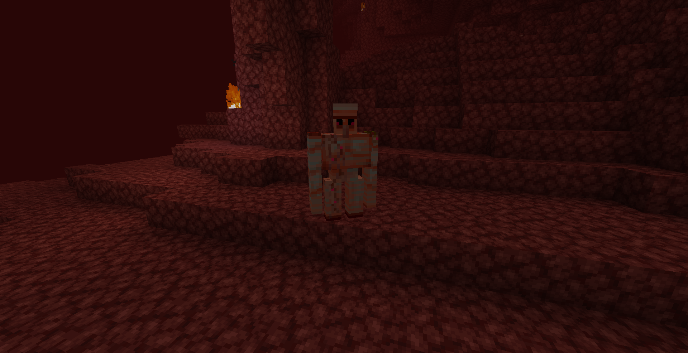

Back to Creatures
Lava Golem

An Iron Golem which used to live in a normal village. But one day, he got lost on the way home from an adventure
and found himself in the Nether. Since then he never saw a human again. Maybe you should ask him, how he is doing!
Health: 48 (24 )
)
Biome Category Spawn:
Nether
Drops:
Drop rate vary´s